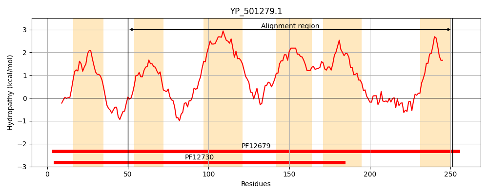
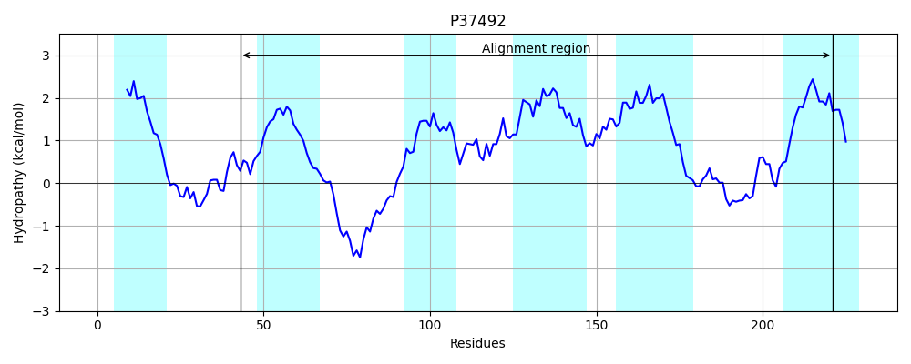
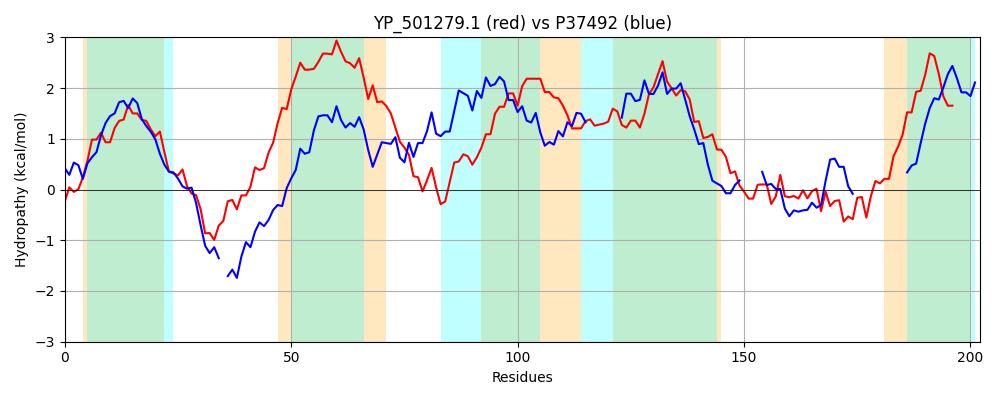

Hit Accession: P37492
Hit TCID: 3.A.1.158.1
Hit Description: gnl|BL_ORD_ID|10101 gnl|TC-DB|P37492|3.A.1.158.1 Uncharacterized protein YybL OS=Bacillus subtilis (strain 168) OX=224308 GN=yybL PE=4 SV=1
Mach Len: 202
e:0.000004
Query TMS Count : 6
Hit TMS Count: 6
TMS-Overlap Score: 4.250000
Predicted Substrates:None
BLAST Alignment:
Score: 108 , Bit scores: 46 bits, E-value: 4.1e-06, Alignment length: 202, Percentage identity: 23
Query: 50 TSAYNGFSWFAFLLIIQASTIISMEFHYGTIKNLLYREYSRTTMIVSKIITLFIISLIYFVITIIASIVIGSLFFNDLNIFESSGNQLSLLNQLLLVSLGTFVGVWLVLSLTLLLSSATNSTGVAIAVGIVFYFASSILAVIQTALLEKIDWLKWNPINMMNIMLQTVEKGFSKSTKLELHELFIGNIAYISIFLILVVFIF 251
T Y+ + I+ ++S FH ++ R R SKI+ + +SL++ I + +I +FF+ + E++ + LLN + LV VG+ L+ L S VA+A+ IV+ S+ ++ L W P + I + + +S S N+ + I I++VFIF
Sbjct: 43 TFGYSSIFAYTLFYIVPFLMLLSNFFHSENPYKVM-RMVKRKNYYKSKIMEIGFVSLLFSSIHTVINITCTHIFFSKNLLVEANFLSICLLNMISLVFFYLSVGIMFRLTYDLFNS-------VALAIFIVYIILDSLYFGVKLLLPNGY----WEPFRDLAIFTNMLNRYWSTS-----------NLIIVYIRQIIIVFIF 221 | Protein Hydropathy Plots: |
|---|
|  |  |
Pairwise Alignment-Hydropathy Plot:
|
|---|
|  |